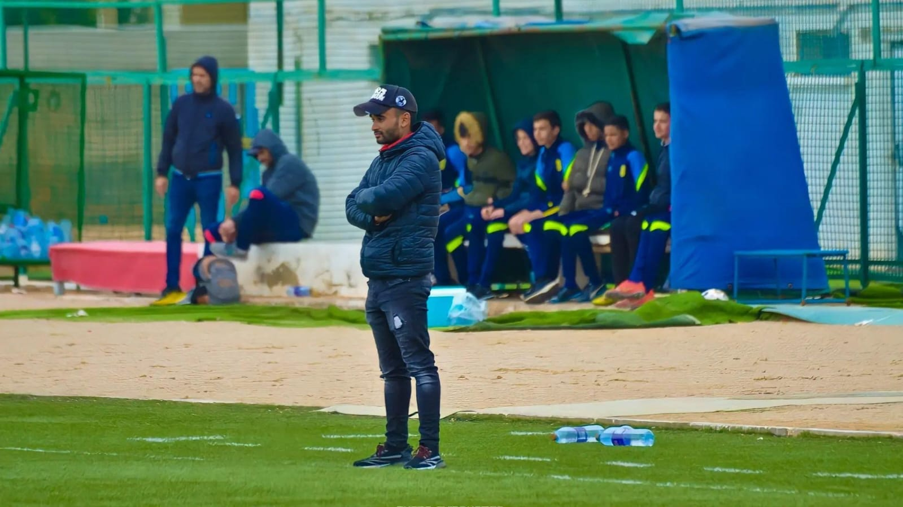

Principium autem unde latius se funditabat, emersit ex negotio tali. Chilo ex vicario et coniux eius Maxima nomine, questi apud Olybrium ea tempestate urbi praefectum, vitamque suam venenis petitam adseverantes inpetrarunt ut hi, quos suspectati sunt, ilico rapti conpingerentur in vincula, organarius Sericus et Asbolius palaestrita et aruspex Campensis.
Ex turba vero imae sortis et paupertinae in tabernis aliqui pernoctant vinariis, non nulli velariis umbraculorum theatralium latent, quae Campanam imitatus lasciviam Catulus in aedilitate sua suspendit omnium primus; aut pugnaciter aleis certant turpi sono fragosis naribus introrsum reducto spiritu concrepantes; aut quod est studiorum omnium maximum ab ortu lucis ad vesperam sole fatiscunt vel pluviis, per minutias aurigarum equorumque praecipua vel delicta scrutantes.
Excitavit hic ardor milites per municipia plurima, quae isdem conterminant, dispositos et castella, sed quisque serpentes latius pro viribus repellere moliens, nunc globis confertos, aliquotiens et dispersos multitudine superabatur ingenti, quae nata et educata inter editos recurvosque ambitus montium eos ut loca plana persultat et mollia, missilibus obvios eminus lacessens et ululatu truci perterrens.
Ex turba vero imae sortis et paupertinae in tabernis aliqui pernoctant vinariis, non nulli velariis umbraculorum theatralium latent, quae Campanam imitatus lasciviam Catulus in aedilitate sua suspendit omnium primus; aut pugnaciter aleis certant turpi sono fragosis naribus introrsum reducto spiritu concrepantes; aut quod est studiorum omnium maximum ab ortu lucis ad vesperam sole fatiscunt vel pluviis, per minutias aurigarum equorumque praecipua vel delicta scrutantes.